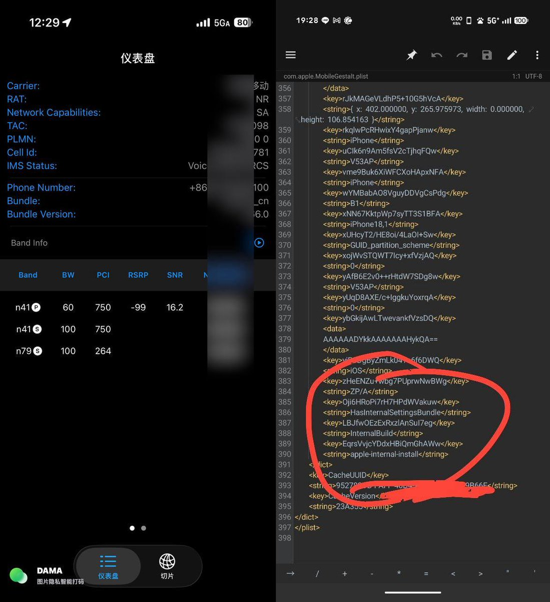

奶昔🥤
@realNyarime
@real_huiliyi FTM的网络类型仅供参考，这玩意儿有完整体：

奶昔🥤
@realNyarime
看外卡测速的大佬们才知道，原来这个是通过misaka26修改MobileGestalt得到的FTM完全体，仅支持iOS26.2beta1及以下版本。
首先用iPhone安装捷径，并运行，根据捷径里面的指引，将MobileGestalt文件导出，传输到电脑上。
https://t.co/Fw2otloJ7d https://t.co/ZQ5OUhjByO
魔法少女✨绘绘
@real_huiliyi
@realNyarime 确实（
但是感觉现在SA iphone漫游有点bug